(Quick Reference)
Weceem Documentation - Reference Documentation
Authors: Stephan Albers, Mark Palmer, July Antonicheva
Version: 1.3-SNAPSHOT
1 Introduction
Weceem CMS Grails Plugin
Weceem is an open source Content Management System. It is written in Groovy and Grails and leverages the Grails
infrastructure to a build customized CMS inside the Grails application.
It can be used to manage content, and create desired content types for custom functionality which can be integrated
with existing systems.
With the Weceem plugin you can host corporate websites, simple blogs, search the site, SEO or build your own
applications. You can define your own content types that add custom functionality or integrate tightly with existing
systems you have.
There are numerous customization points that allow you to tailor the security mechanisms, administration skin, URL
paths, scope for custom data types and server-side scripting using Groovy. It is built from the ground up to be
embeddable as well as a standalone application.
The plugin supports multiple content repositories. Each repository is called a "Space" and represents a website that
you maintain.
Spaces are used to map and track content exchanges. They can have multiple access rights defined in the Weceem
security policy, hence one user can have permission or rights for different spaces.
Content is created for the visitors of your website. Different types of content can be created and arranged in any
desired structure within a Space
All you need for Weceem is an SQL database for storing content, a Java servlet container like Tomcat or Jetty to run.
Weceem's content is stored in a SQL database and not in files on the server filesystem. Uploaded file content is stored
on the server filesystem and information about the file stored in the SQL database.
Current version of Weceem plugin (Weceem-1.2) is compatible with Grails 2.3
Feature Highlights
- WYSIWYG Editor
- Hierarchical content repository
- Blogs
- Full-text search
- Form submissions
- Templates with inheritance
- Reusable widgets
- Multiple-language support
- Tagging
- Auto-publish and auto-unpublish by date
- Spaces: manage many sites in a single Weceem instance with per-space permissions
- Content types include: HTML, Folder, JavaScript, CSS, Files, Blog, Comment, External Link, Virtual Content, Wiki Pages, Groovy Scripts and Actions
- Extensible using Java, Groovy and Grails
- No design or SEO restrictions
2 Configuration and installation
Installation
Weceem is available either as a standalone Java web application (.war file) for deployment to standard Java server environments, or as a plugin for the
Grails application framework.
Requirements
Deploying Weceem CMS requires:
- Java 6 or higher
- A supported SQL server e.g. MySQL or Postgres
- A recommended 500MB RAM allocated to the Java VM
- A writable filesystem folder for storing Lucene full-text search indexes
You don't need to install or have any understanding of Grails to use Weceem, but if you want to develop a custom application that uses Weceem, you will also need to install Grails.
Upgrading all Weceem installations
Prior to installing a new version of Weceem, always export each of your spaces to ensure you have a backup. Additionally, ensure your database and uploaded files (e.g. WeceemFiles/) folder are backed up.
Installing Weceem Plugin into the application
To install the Weceem plugin, the dependency must be added into grails-app/conf/BuildConfig.groovy file in Grails application.
compile ':weceem:1.3-SNAPSHOT'
The plugin should function with Grails versions 2.1 and higher.
Once the plugin is installed into the application, a few Grails configuration changes may be required to make the CMS work in your application. These options are required for Weceem to operate correctly inside the application.
Note: When upgrading from an earlier version of the Weceem plugin, you may need to manually uninstall some older Grails plugins, if your new release of Grails does not do it automatically.
Warning! Weceem plugin uses Searchable plugin (version 0.6.6 or higher), it requires additional maven repository
"http://repo.grails.org/grails/core" for getting
dependencies. Do not forget to configure:
repositories {
…
mavenRepo "http://repo.grails.org/grails/core" } Configuration
Once the plugin is installed, there may be some Grails configurations that need to be changed to make the CMS work in the application. These options are required for Weceem to operate correctly within the application.
Configuration of Weceem is primarily through Grails configuration settings. In Weceem application these will come from a properties file that could be configured via system property
specified in the command line. But in the custom Grails application configuration is typically loaded from Config.groovy.
If you use a
weceem.war that is built from GitHub and don't define
weceem.config.location path, pay attention that
the application will look for
weceem.properties file from server root, for example for the Tomcat Server the
properties file should be at
/tomcat-server/webapps/weceem.propertiesThere are also several configuration options that allow you to customize how it behaves and looks.
Allowing file extensions
By default, Grails applications have content negotiation enabled based on file extensions in the URI, and this file extension is then removed from the URI. For the CMS to function correctly with content URIs like "common.css" and "jquery.js", you need to turn this off. To do so, change your application's Config.groovy to :
grails.mime.file.extensions = false
Default codec usage
By default, Grails applications are configured to use value 'html' - legacy setting for codec used to encode data with ${} . But Weceem plugin requires such data without encoding.
grails.views.default.codec="none"
Be attentive with Resources plugin!
Uninstall the `Resources` plugin or keep it but set
grails.resources.adhoc.excludes=['/plugins/weceem-1.3-SNAPSHOT']
It is necessary to exclude everything served by Weceem (see above note on setting a content URL prefix) because Weceem must serve this content and Resources assumes that `/css` and so on are static resources.
URL mappings and Weceem
To replicate the behaviour of the binary Weceem Application WAR that can serve content from the "/" URI of your application, you must ensure the default URL Grails mapping for "/" in your application is removed. You will also probably benefit from removing the generic "$controller/$action?/$id?" mapping which can cause confusion.
You can namespace all Weceem controllers using configuration options to prefix all URIs that Weceem uses.
Setting URL prefix for all content served by Weceem
Weceem by default maps all created content into the "root" URI of the application. URLs are formed by "/{space URI alias}/${document URI alias path....}". Having a space with a blank alias URI, allows you to map content into the root URI. To achieve this Weceem has to be rather promiscuous with its URI mapping.
If you would like your own controllers to be accessible with your own Grails URL mappings, you can prefix all content URIs by setting a single Config.groovy setting:
weceem.content.prefix = 'content'
With this, all Weceem content will be accessed under "/content/" - i.e. http://localhost:8080/content/About
Setting URL prefix for non-content Weceem controllers
Weceem has its own non-content controllers that provide publicly-accessible support functionality such as the search, archive and visitor content submission controllers. If there are name conflicts with your own controllers, prefix these URIs with the following Config.groovy setting:
weceem.tools.prefix = 'wcm-tools'
This will then ensure that all the Weceem tool controllers are accessed like this
http://localhost:8080/wcm-tools/searchSetting URL prefix for Weceem administration UI
The Weceem repository and administration UIs may also clash with your URI conventions, or you may have your own "admin" controller that you want at "/admin". For this, you can just change the prefix for the Weceem Admin controllers by adding the following to Config.groovy:
weceem.admin.prefix = 'wcm-admin'
The standard Weceem admin interfaces under http://localhost:8080/wcm-admin/
Defining available default Space templates
You must tell Weceem what default content spaces are available to users or your code. There are two default spaces provided by the plugin but usually your application will want to specify alternative defaults so that it "boots" with your own content in it.
Setting the location of uploaded files
Weceem, by default, will store files uploaded by you (e.g. images, CSS and so on) to a folder inside the application's folder on the server. However, during an application upgrade, this becomes inconvenient because the files will often need to be manually duplicated in the new location on the server.
Since 1.0-M1 you can set the location of the upload folder or URL:
// Tell weceem to use a specific path /var/weceem/uploads
/var/weceem/uploads weceem.upload.dir = 'file:///var/weceem/uploads'// or tell weceem to keep it in the application folder, but with a new URL
weceem.upload.dir = '/weceem_uploads/'
Weceem auto-senses file URLs in the value and uses that location if it is a file URL. If it is not a file URL, then it assumes it is a new URL path and uses it when serving the files.
Weceem will still store the files in
<app-dir>/WeceemFiles, if a value is not specified for this config variable. These will be served from
http://<yourhost>/<yourapppath>/uploads/Customizing user profile and logout
When integrating your own user authentication/authorization system, you will want the Profile and Log Out links in Weceem admin to point to the relevant functions in your application. Specify a map of arguments that will be passed to the Grails
g:link tag to create the links for these functions, with the following Config.groovy settings:
weceem.profile.url = [controller:'register', action:'edit'] weceem.logout.url = [controller:'logout']
Controller/action etc can be anything you like. You could use any arguments accepted by the Grails linking tags here e.g: uri, url, params, mapping and so on.
Customizing the look and feel of Weceem Admin
For the Weceem Admin pages to fit in better with your application's own styling, you can specify a different layout GSP for it with this Config option:
weceem.admin.layout="mylayout"
This stops Weceem from using the standard "weceemadmin" GSP layout and uses yours instead.
Customizing page for 404 and 406 Server responses
For the HTTP 404 and HTTP 406 Server responses, you can specify a different GSP pages with this Config option:
weceem.page404 = 'errorpage404'
weceem.page406 = 'errorpage406'By default, the pages '404.gsp' and '406.gsp' from Weceem plugin are used.
Controlling creation of the default space
You can configure whether or not Weceem should create a default space at startup, as well as what templates are available to the user:
// Turn off default space creation if no spaces found at startup
weceem.create.default.space = false// Set the file: or classpath: URL of the default space zip if default creation is ON
weceem.default.space.template = "file:/path/to/template.zip"
Changing the list of space templates available to users
To change the list of space templates available to users when they create a new space, list them in your Config:
// Set the list of available space templates when a user creates a new space
weceem.space.templates = [
default: "classpath:/org/weceem/resources/default-space-template.zip",
basic:"classpath:/org/weceem/resources/basic-space-template.zip"]Space templates are regular Weceem export ZIPs, and can reside in the file system (file:) or classpath (classpath:)
Use this to hide the default Weceem spaces and restrict user access to the space templates. This list of space templates does not have to include the default space template, hence you can have a default initial space that is unavailable to the users.
3 General behaviour and concepts
Content Publishing Workflow
A simple workflow mechanism is implemented in Weceem.
In Weceem, the workflow hinges on the Status of each content node. The following Status options are provided:
- Draft
- Unmoderated
- Reviewed
- Approved
- Published
- Archived
There is no UI for editing the list of statuses, but if you are a developer and wish to add new ones, bear in mind the rules for the workflow as set out here.
Each status has a numerical code - e.g. Draft is 100, Unmoderated - 150, Published - 400 etc. Each status also has a flag to indicate whether or not it is "public" content i.e. can be viewed by non-administrators. By default Published is the only status with this flag set.
All changes to status are made manually by repository users, unless the
Publish From or
Publish Until fields have values,
In the case of
Publish From, once the date passes, the status of the content will change to the first status with "public content" flag switched on, which has a higher code number than the current status of the content. This offers scope for other statuses beyond the existing set, and migration upward through those states.
The one caveat here is that the
Publish From mechanism will never change the status on content that is currently in the "Unmoderated" or "Archived" status used for visitor-submitted or expired content. If you need to change which status is used for "Unmoderated" or "Archived" content you can do this by setting the configuration variables to the numerical code values of the desired status
weceem.unmoderated.status and
weceem.archived.statusWith
Publish Until, the status of any published content that has expired will be set to the "Archived" status or the status defined in the configuration variable
weceem.archived.status Page Variables
Templates, Widgets and HTML Content (with allow GSP enabled) have access to a data model that includes several variables used to render information about the current page, user or space.
Variable: pageThis object presents information about the current page of the web site. The page is constructed from a template and content, and is located using a unique URI. This is not to be confused with the "active" content node.
Properties| Name | Description |
|---|
| URI | uri of this page relative to the current space |
| parentURI | uri of this page's content node's parent |
| lineage | list of ancestor nodes, in top-down order |
| title | page title |
| titleForHTML | page title for HTML title tag, including SEO keywords |
| titleForMenu | page title for rendering menus, usually a shorter version of the title |
Variable: userThis object presents information about the current user.
Properties| Name | Description |
|---|
| username | User's login name |
| firstName | User's first name |
| lastName | User's last name |
| email | User's email address |
Variable: nodeThis object provides access to information about the primary content node of this page. The properties available will vary based on the content type.
Properties| Name | Description |
|---|
| title | content title |
| content | content text |
| aliasURI | primary URI for this content node |
| language | language of this content, a Language object |
| createdBy | name of the user who created the content |
| createdOn | date the content was originally created |
| changedBy | username of the last user to edit the content |
| changedOn | date on which the content was last edited |
| space | space (object) to which this content node belongs |
4 User Guide
4.1 Administrative UI
To edit or create content, view the content repository or perform any administrative functions you must first log in to
Weceem.
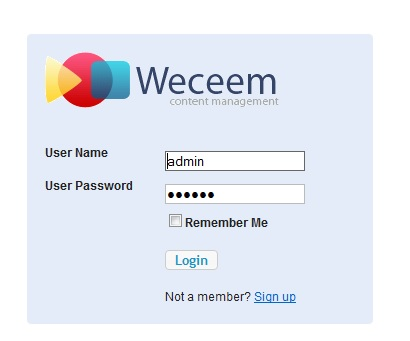
You can do this by browsing to <yourserver-url>/admin if you are using the standalone Weceem WAR. Here you will be
prompted for your user name and password. By default new installations have a single "admin" account with password
"admin". You must change this password, and you can do so in the Administration section.
Logging in to your own application that uses Weceem plugin
Normally this will be a case of browsing to <yourserver-url>/admin but your application may have configured weceem to
use a different URL mappings such as /wcm/admin. You need to look at your application's configuration if /admin does not
work for you.
Weceem contains administrative UI for users that have access to creating new content and managing existed sources.
In your weceem.properties file or in Config.groovy file the user can customize URL that leads to admin UI. By default
the mapping
"wcm/admin" will be used.
Admin UI consists of two tabs: "Content" and "Administration".
Content tabThe content repository is the main user interface for Weceem.
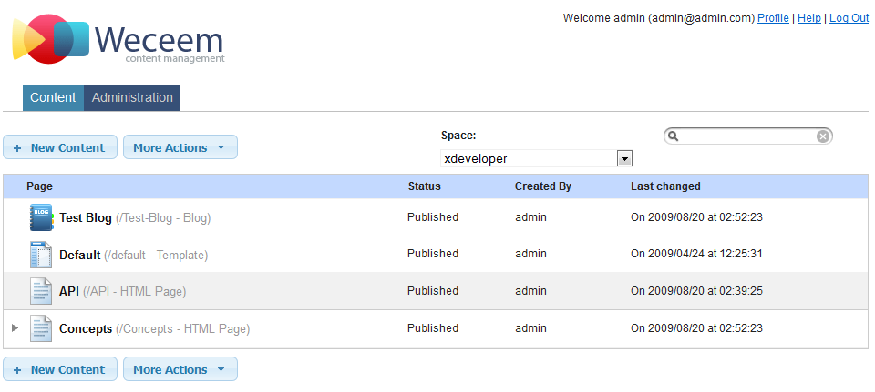
What you see in the repository is the tree of content for the currently selected space. You can switch spaces using the
space selector box.
Each row in the table represents one of your content nodes. You can do the following things with rows:
- To select a node, you click its row (but not the icon).
- To drag a node to a new location in the tree, you drag the content's icon
- To edit the content you click the title of the content
With a row selected, it will be highlighted and when you click the "New Content" or "More Actions" button the operation
will be performed on the selected node. So when a node is selected and you choose "New Content", the new content will be
a child of the node you selected in the repository.
To deselect a row - so that you can create new content at the root of the repository - you just click the row again.
You can also search for content using the search box. The results can be further filtered by content type and date, and
sorted by clicking the column headers.
Administration tabThe tab contains several editors:
- Spaces
- Synchronize files
- Plugins management
- Licenses
- Check links
- Users
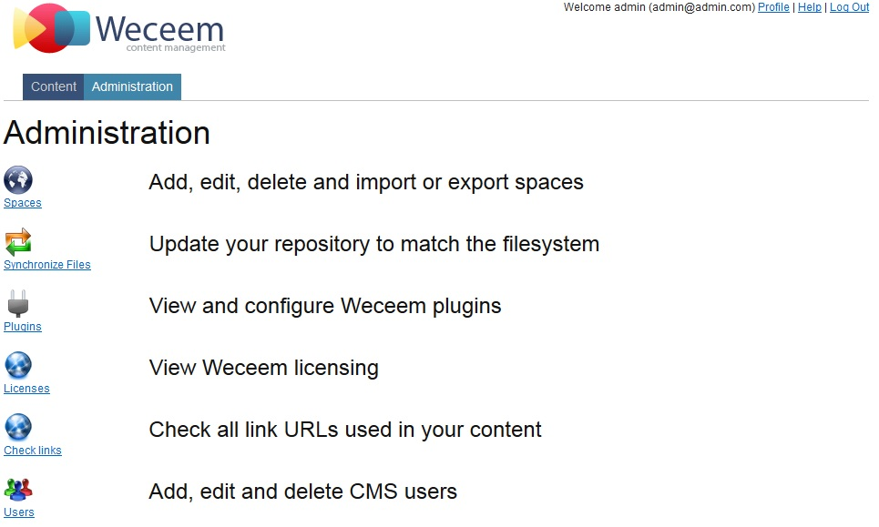
4.2 Create Space
Weceem supports multiple content repositories. Each repository is called a "Space" and represents a website that you
maintain.
About spacesA Space contains "Content" that is served to your visitors. There are many different types of Content that you can
create and arrange in any structure you like within your Space. You can have as many spaces as you like, representing
different sites or micro sites.
Spaces are separate content graphs and are imported and exported separately for backup purposes and have a URI alias
that defines the web address of that space within your server. You cannot normally use content from one space inside
another.
Spaces can have different access rights defined in the Weceem security policy, so the same user may have different
permissions in different spaces.
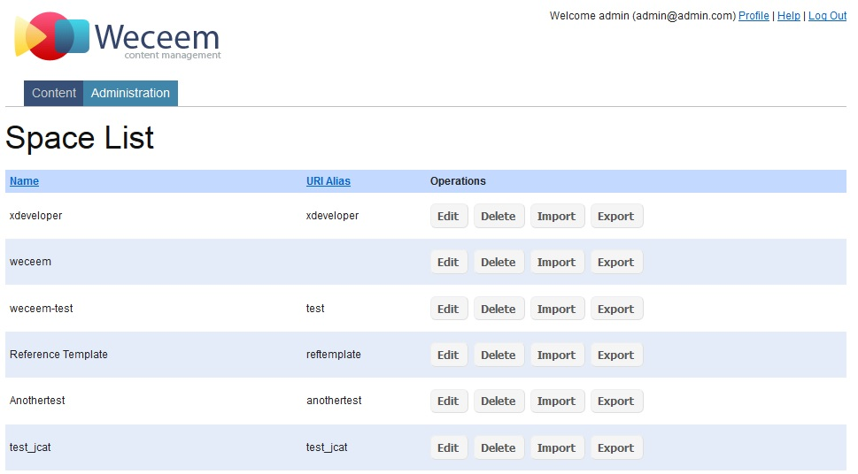
Each Space is determined by its name and alias URI, where alias URI is a prefix for your site (Space), that will be used
in URL mappings when you try to review the ready site content.
4.3 File Synchronization
Synchronizing a space with the server filesystem will create new content nodes for any directories and files that exist
in the filesystem but are not currently in the content repository.
You will be given the option to delete any content nodes that refer to server files or directories that no longer exist.
4.4 Plugins
The feature you selected is not quite ready. Please view the Weceem.org roadmap for what is coming in the next release.
4.5 Licenses
Weceem is 100% open source licensed.
The Weceem application and plugin and Grails are Apache 2 licensed
The jQuery and jQuery UI libraries are provided under the MIT license.
4.6 Check Links
The feature you selected is not quite ready. Please view the Weceem.org roadmap for what is coming in the next release.
4.7 CMS User management
To create, edit or manage the content repository, users must be able to log in to the CMS.
When using the Weceem Application, a simple user management system is provided.
To access this, log in as administrator and go to the Administration section and then select Users. From there you can
create and edit users.
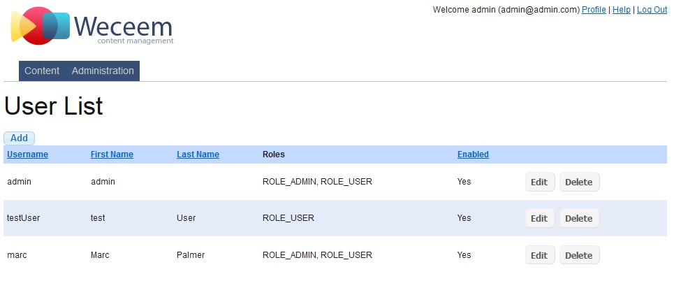
4.8 Create HTML pages
About contentContent is ultimately what your end-users view on your site. Weceem has an extensible content system, and supplied
content types for the most common web content.
The following content types are supplied out of the box:
- Action - A server-side action that will execute the code in a Groovy Script node, for example to create new content
nodes or send an email
- Blog - The root node of a Blog, which has Blog Entry nodes as children
- Blog Entry - An entry (child of) a Blog node
- Comment - A comment on a content node. Any nodes can have comments attached or created.
- External Link - A URL of another website. When this URI is rendered, it redirects to the external site
- Folder - A folder for grouping together content nodes and creating URI hierarchy
- Groovy Script - A piece of Groovy code to execute on the server, used by Action nodes
- HTML - A piece of HTML which may contain GSP (Grails Server Page) tags
- JavaScript - A piece of JavaScript source
- Server File - A file uploaded to the Weceem repository and stored on the server filesystem, e.g. an image file
- Server Directory - A directory on the server filesystem which contains Server File nodes
- Stylesheet - A CSS style sheet
- Template - A GSP template used to layout and decorate the current content node
- Widget - A reusable GSP fragment for rendering sections of a page, e.g. a header/footer or a remote news feed.
The Template, Widget and HTML content nodes can use Weceem tags and other Grails tags to perform view rendering logic.
Weceem's content is stored in an SQL database, not in files on the server filesystem. The exception to this rule is
uploaded file content, which is stored "as is" in the server filesystem, with information about the files stored in the
SQL database.
When editing content, you are shown only the fields appropriate to that type of content. For example when editing
JavaScript or CSS you see a code editor, but when editing HTML content you see a rich text editor.
Developers writing their own Grails application that embeds Weceem can easily add their own new content types that have
a great deal of flexibility allowing them to customize their behaviour in the editor and when rendered.
When creating new content the currently selected repository node will become the parent. You will be asked what kind of
content you wish to create, and then be shown the content editor for that content type.
Different content types have different fields and capabilities, and the editor adapts accordingly. Most content types
will have at least a Title and Status, an area for the main content, and the Extras, Metadata, Change history and
Parents & Children sections.
In the editor you can
Save and return to the repository or save and continue to keep your changes but carry on
editing. You can also
Preview your changes in a new window without saving them, if the content is able to be rendered
in isolation (e.g. Templates and Widgets cannot themselves be previewed).
The HTML editor will present itself as a rich text editor unless you have saved it with "Allow GSP", in which case it
will show as a code editor. Style sheets, Javascript, Templates, Widgets and Groovy code all present with a syntax
highlighting code editor.
Create HTML pageIf the user needs to create HTML page, he needs to select row in the content repository tree by clicking on it. As the
result the row is preselected by color. The row selection means that the content will be child to selected content. Then
at the top of
Content tab there is a button
New Content that offers a list of available content types to be created.
Select the type "HTML" and press "Create" button. The new content editor
should be shown to the user
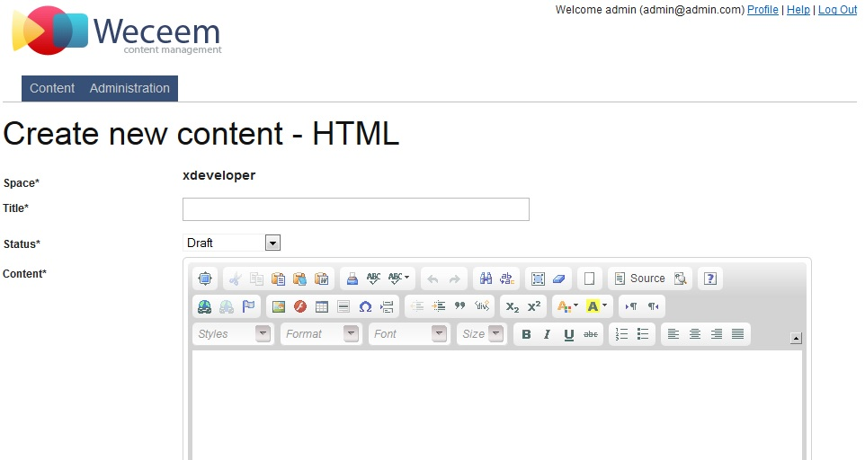
Creating a blog in Weceem requires just two steps:
- Create a Blog content node
- Create a Blog Entry content node underneath (as a child of) the blog node
If you are using the default styling, when you create the Blog you can set the Template to the default blog template
supplied.
Blogs in Weceem are just like any other content, and by gluing together a Template, some Widgets and some Weceem GSP
ags, you get full blog functionality (caveat: pinging blog aggregators is not yet supported). See the examples in the
default space template for further details.
To enable comments on your blog you must edit your Weceem security policy file and allow unauthenticated users to create
content of type org.weceem.content.WcmComment. Make sure that you do this for only that type, or
malicious users may be able to create non-Comment content on your site!
The default space template for blogs uses widgets to render a single blog entry view, or a list of the most recent
posts, and widgets to render the comment form and list of current comments.
The generic content submission mechanism of Weceem is used to submit comments by users, and the comment widget uses the
Weceem content submission tags to set this up.
The Weceem archive tags are used to render the months for which there exist child nodes of type "Comment", with links to
view those. Finally, the widgets render the list of tags assigned to the blog entry, with links to search for other blog
entries based on those tags.
For preparing new blog, the user needs to select row in the
content repository tree by clicking on it. As the result the row is preselected by color. The row selection means that
the content will be child to selected content. Then at the top of
Content tab there is a button
New Content that
offers a list of available content types to be created. Select the type "Blog" and press "Create" button. The new
blog editor should be shown to the user
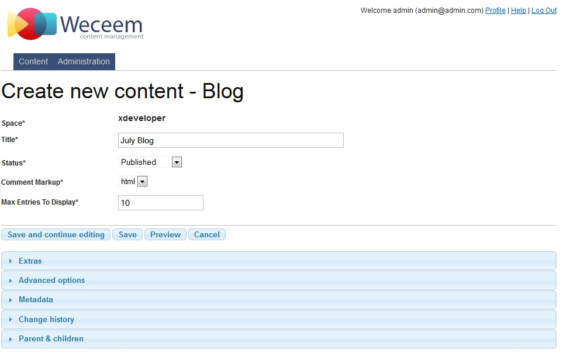
If the Blog is created, then it is possible to create Blog Entries. The user should select "Blog row" as a parent and
press
New Content button to select
Blog entry content type. The editor contains CKEditor for entering content.
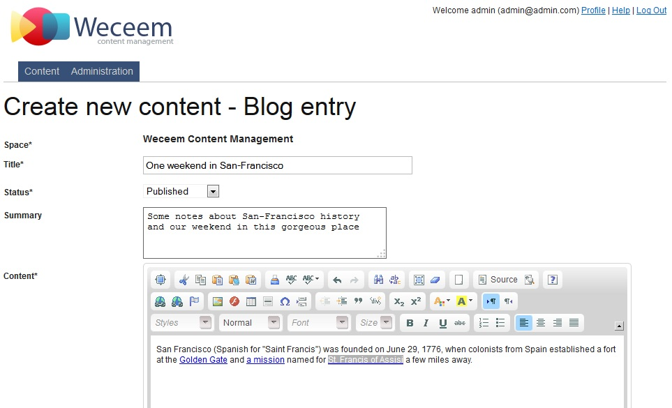
Also it is possible to create or manage existed Comments. If you put a submission form for your Blog Entry page then
the users will push comments to your through your site. Also you can create new Comment from "Content" tab by pressing
button "New Content" and selecting
Comment content type.
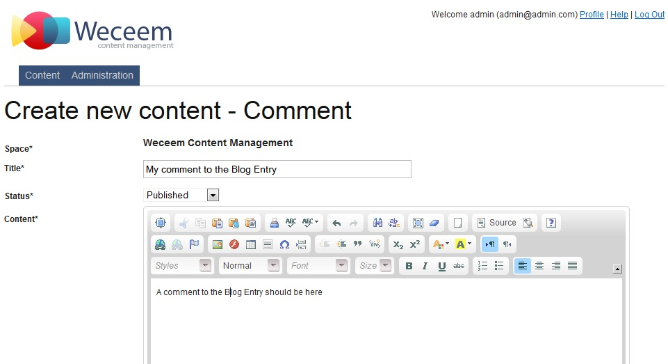
Visitor comments and submitted contentSites often permit visitors to leave comments - be they blog comments, visitor books or comments on Wiki pages.
Weceem supports a generic mechanism for visitors to create new content nodes via a form, filtered through the security
policy.
This is, for example, how the default space implements comments on blogs. A widget is used to render a form to capture
the comment fields and submit them to Weceem's content submission controller - where they are, if the security policy
permits that kind of content at that URI, from that (anonymous) user - saved in an "unmoderated" status.
Creating a comment submission form
To allow users to submit content, you need to provide the data from the client browser - usually with a form that the
user completes. You will usually do this inside a Widget node so that the code can be reused:
<g:hasErrors bean="${submittedContent}">
There were some errors on your submission, please check below
</g:hasErrors><wcm:submitContentForm parent="${parentContent}" type="org.weceem.content.WcmComment" success="${parentContent}"><bean:require beanName="submittedContent" className="org.weceem.content.WcmComment"/>
<bean:field beanName="submittedContent" property="author" label="Your name"/>
<bean:field beanName="submittedContent" property="email"/>
<bean:input beanName="submittedContent" property="websiteUrl" label="Website URL"/>
<bean:input beanName="submittedContent" property="title"/>
<bean:field beanName="submittedContent" property="content" label="Your comment"/>
<input type="submit" class="button positive" value="Send comment"/></wcm:submitContentForm>
Here, three different Grails taglibs are being used to create the form:
- g:hasErrors is a Grails tag used to detect any errors on the submittedContent data and alerts the user if so
- wcm:submitContentForm creates a form that will submit content of a specific type, as set in the "type" attribute.
The "parent" attribute must be set to the node that will be the parent of the new content (or null for root content),
and the "success" attribute is the repository URI path or node that should be shown after the content has been
submitted - e.g. the original Blog Entry
- bean:* tags are from the Grails bean-fields plugin that is provided as part of Weceem. They make it easy to render
sensible default fields, labels and error messages for properties of an object. In this case the object is the
"submittedContent" bean used by the content submission form.
The form will include a link to the content submission controller. This controller will save the content if it is valid,
or return to the existing content with the "submittedContent" object populated with the previous data and any errors
attached. Using the bean:* tags of the Grails Bean-Fields plugin is merely a convenience, but is very useful as it will
display the validation errors associated with each field inline in the form.
If the submission succeeds - which requires the user to have permission to create that type of content under the
specified parent in the repository - it will redirect the user to the content specified in the "success" attribute.
The content will be in the "unmoderated" status, until an administrator updates the status to Published.
4.10 Server Directory and Server File
If the user needs to add some files, f.e. images then it is possible to create a "Server Directory" on a file system and put
your uploaded files as "Server File" there. Although there are special content types for CSS anf JS files such as
"CSS Stylesheet" and "JavaScript Source", but they are restricted to be no longer then
500000 symbols.
In case if the user wants to use the biggest CSS, JS libraries or images, the
ServerFile is the type that is needed to
be used.
Firstly create
Server Directory - the folder on the file system will be created, then put your uploaded files
as
Server Files to this directory.
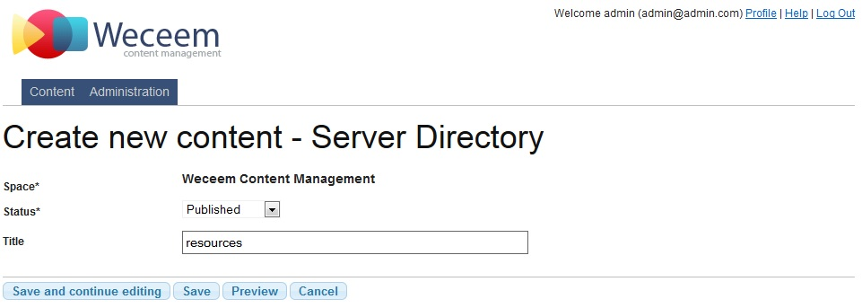
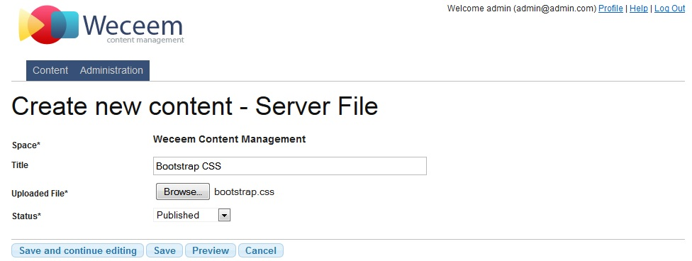
If the user needs to prepare template, he needs to select row in the content repository tree by clicking on it. As the
result the row is preselected by color. The row selection means that the content will be child to selected content. Then
at the top of
Content tab there is a button
New Content that offers a list of available content types to be created.
Select the type "Template" and press "Create" button. The new content editor should be shown to the user. Usually the
template is a GSP page that uses Weceem tags for rendering necessary content. Check
Tags section for more details.
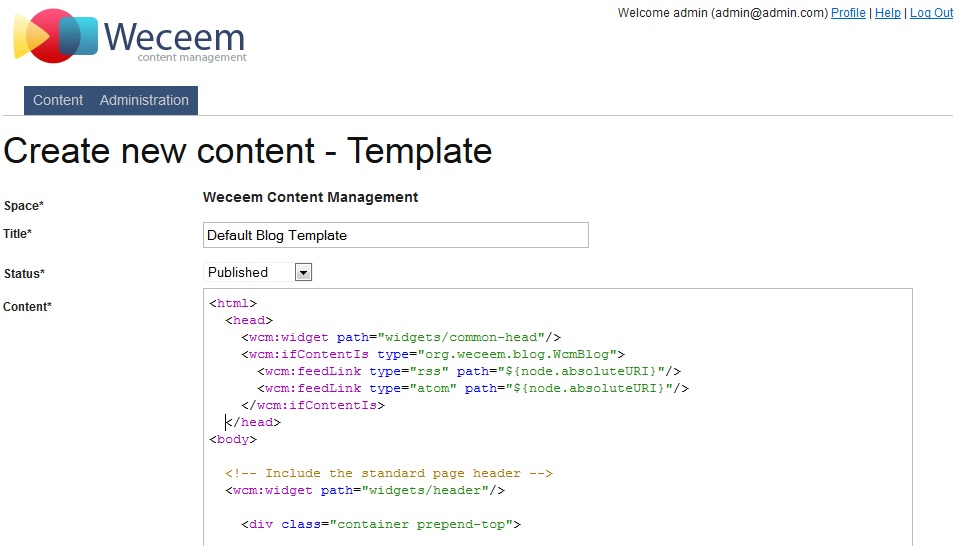
Also it is possible to create widgets, by selecting content type "Widget" to prepare widgets for templates. Usually
template is consists from widgets as from blocks. It helps template to be more flexible and customizable.
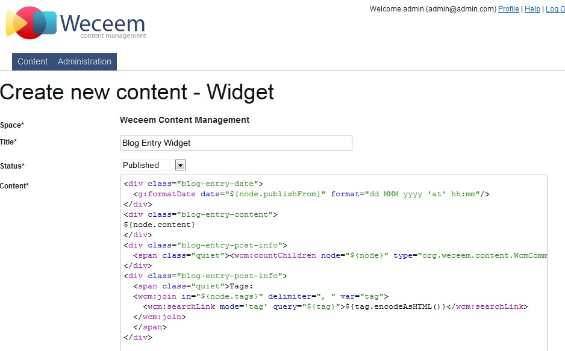
4.12 Create Action
It is possible to create content Action that is determined with Groovy Script that should be executed. For example,
sending mails of checking links on the page. To create new Action is possible using button "New Content" at the top of
repository tree and selecting content type
Action in the available content types. The simple editor is available for
creating user Actions.
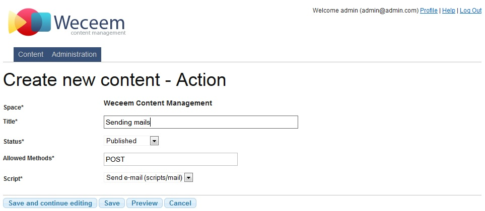
4.13 Create Binary Content
The content type
Binary Content represents files, that are stored in the data base using base64 encoding.
Don't use it for large content. It is intended for logos etc. To create such content, please check that at the top of
Content tab there is a button
New Content that offers a list of available content types to be created. Select the
type "Binary Content" and press "Create" button. The new editor similar to
Server File editor should be shown to the
user
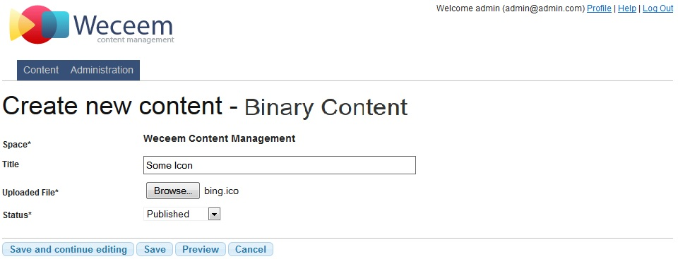
4.14 Create CSS Stylesheets and Javascript Sources
There are two ways to create JavaScript and CSS resources in Weceem.
You can upload JS and CSS files to "Server File" content nodes, or you create JavaScript and Stylesheet nodes and edit
the files directly in Weceem.
Whichever approach you choose, you include these files in your Template or Widget nodes something like this:
<html>
<head>
<link rel="stylesheet" href="${wcm.createLink(path:'css/main.css')}"/>
<script type="text/javascript" src="${wcm.createLink(path:'js/main.js')}"></script>
</head>
…
</html>Here we just use the wcm.createLink tag to get the URL to the content nodes. Whether you used Server File or
Stylesheet/JavaScript nodes for these files, this will produce the correct URL if the "path" value points to the
correct nodes. Note that the Alias URI of the nodes should include the file extension although it does not have to.
Some older browsers may require the file extension for correctly identifying the content type.
You can of course place these files anywhere in your repository as long as you use the correct content path URI.
Note that if your CSS files need to reference external resources like images, you will need to make sure the links make
sense in relation to the content repository. Relative links will work for Server File nodes, which must be under a
Server Directory node. However a Server Directory node cannot have StyleSheet or JavaScript child nodes, so usually if
you need to link to relative images from a stylesheet, you will need to upload it as a Server File instead of a
StyleSheet node. That is, unless you have a Server Directory node that is a sibling to the StyleSheet node, and you
place your images under there.
At the top of
Content tab there is a button
New Content that offers a list of available content types to be created.
Select the type "CSS Stylesheets" or "JavaScript Sources" and press "Create" button. The simple content editor should be
shown to the user.
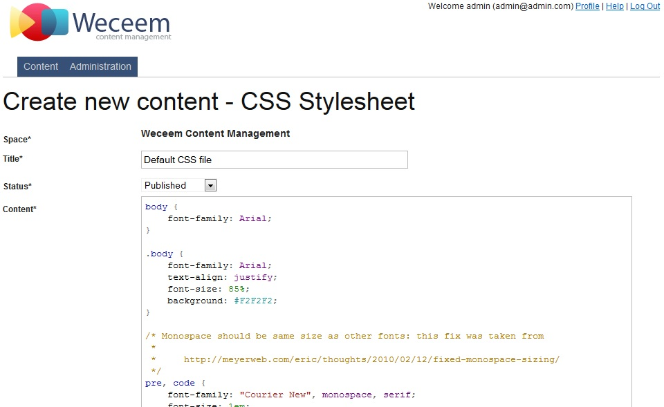
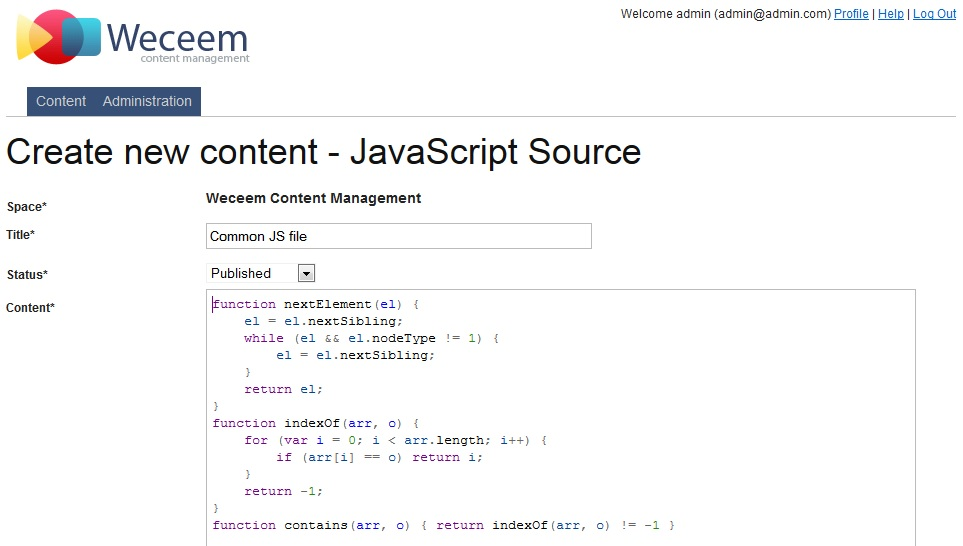
4.15 Create External Link
The user has possibility to create content with the type "
External Link". This content type is representing a link to
an external URL . To create new
External Link, check at the top of
Content tab there is a button
New Content that
offers a list of available content types to be created. Select the type "External Link" and press "Create" button. The
special content editor should be shown to the user.
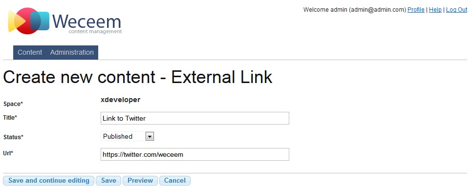
4.16 Create Groovy Script
It is possible to create Groovy Scripts, that can be used for creating new content Actions. For that aim at the top of
Content tab there is a button
New Content that offers a list of available content types to be created. Select the
type "Groovy Script" and press "Create" button. The special content editor should be shown to the user.
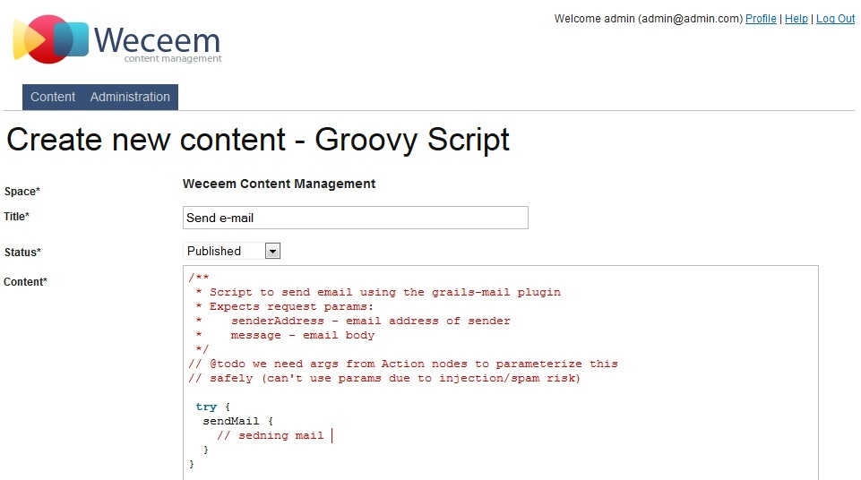
4.17 Create Folder
It is possible to create Folders in content repository tree. The Folders usually used to organize content by types or
logically. For example, the user can create Folders "CSS" and "JavaScript" and put CSS Stylesheets and JavaScript
sources in them respectively.
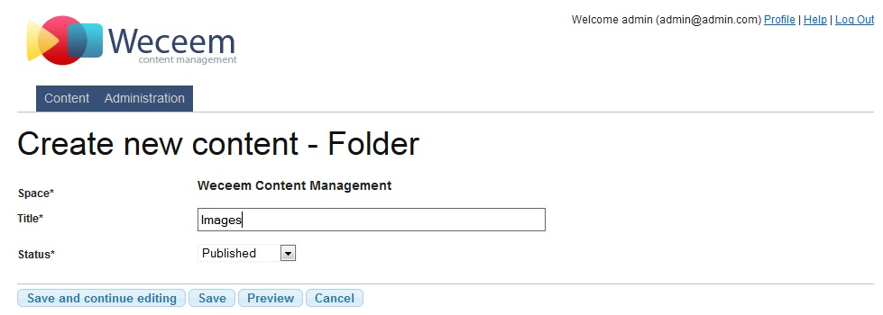
4.18 Create Wiki page
It is possible to create
Wiki page content by using button "New Content" at the top of repository tree and selecting
content type
Wiki Page in the available content types. The editor is available for creating new content.
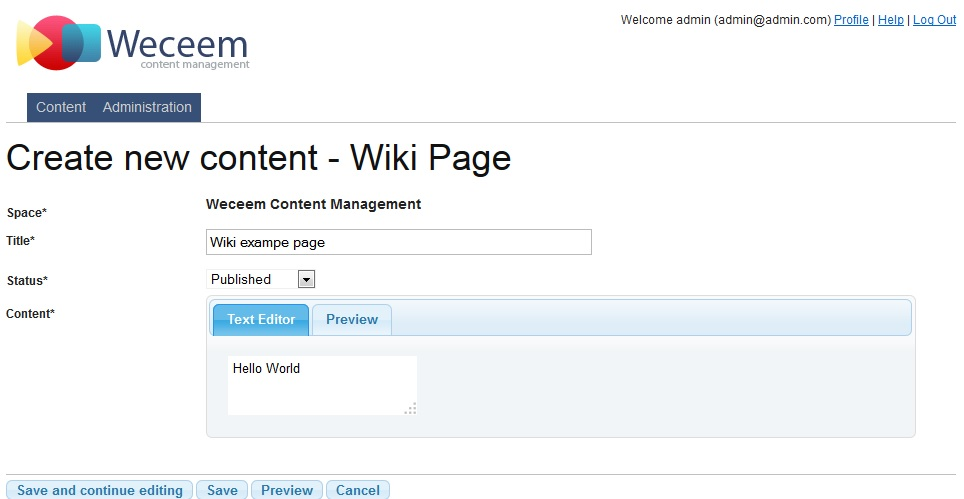
4.19 Create Virtual Content
There is a possibility to create virtual content for any existed content in the content repository tree. For that aim,
please check button "New Content" at the top of repository tree and select content type
Virtual Content in the
available content types. Each
Virtual Content is determined by its "target" - the content node from repository tree.
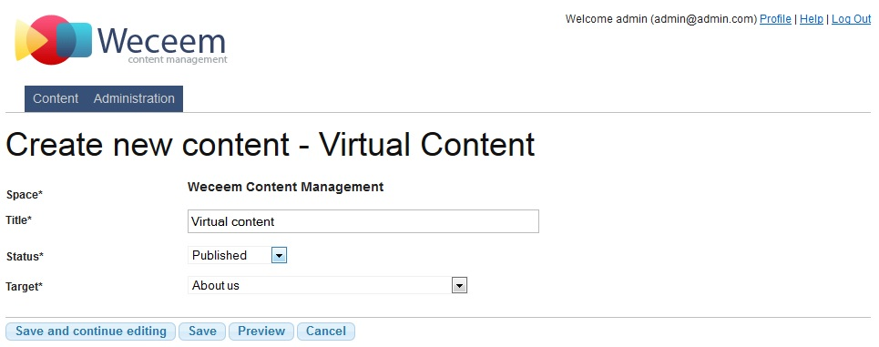
4.20 Statuses, Publishing and Unpublishing by date
The statuses are very important part in content management. According to status of a content it can be shown, hidden,
publish or unpublish by specified date.
The following Statuses are provided:
- Draft
- Unmoderated
- Reviewed
- Approved
- Published
- Archived
Each status has a numerical code - e.g. Draft is 100, Unmoderated - 150, Published - 400 etc. Each status has a flag to
indicate whether or not it is "public" content i.e. can be viewed by non-administrators.
By default
Published is the only status with this flag set.
All changes to status are made manually by repository users, unless the
Publish From or
Publish Until fields have
values.
In the case of
Publish From, once the date passes, the status of the content will change to the first status with
"public content" flag switched on, which has a higher code number than the current status of the content. This offers
scope for other statuses beyond the existing set, and migration upward through those states.
The one caveat here is that the
Publish From mechanism will never change the status on content that is currently in
the "Unmoderated" or "Archived" status used for visitor-submitted or expired content. If you need to change which status
is used for "Unmoderated" or "Archived" content you can do this by setting the configuration variables to the numerical
code values of the desired status
weceem.unmoderated.status and
weceem.archived.statusWith
Publish Until, the status of any published content that has expired will be set to the "Archived" status or the
status defined in the configuration variable
weceem.archived.status.
4.21 Search in Weceem
Weceem has full-text search support for visitors using your site.
All of your content is automatically indexed as appropriate, all you need to do is add a way for them to start a search,
and customise the display of the search results.
To add a default search field, you can use the wcm:search tag:
<wcm:search types="org.weceem.html.WcmHTMLContent,
org.weceem.blog.WcmBlogEntry,org.weceem.content.WcmComment"/>This single tag creates the search field and button, which you can style with standard CSS. The "types" attribute is
used to limit the types of content that can be returned by the search. You usually don't want your Widgets, CSS or
JavaScript code coming back in search results! This also means you can have different searches on your side, for
different kinds of content, including custom content types. For example you may have a custom ProductInformation
content type and want to add a product-only search feature for users.
Other attributes of this tag allow you to control the parent URI to use as the context for the search, and the content
path for the results path which will render the search results. For full details see the wcm:search tag page.
You can also create a completely customized search form and use wcm:searchLink to create the appropriate link to invoke
the search for the types and other attributes you specify.
4.22 Operations with content repository tree
There is a list of operations that can be done with content repository tree. The button with dropping menu items is
situated above the content repository tree, it is called "
More Actions". The following operations are available:
- Preview selected content
- Delete content
- Move to Space
- Duplicate...
Preview selected opens a new page/tab with the content previewing. Not all types of a content can be previewed, for
example Templates and Widgets cannot be previewed as standalone pages. If the user tries to get preview for them the
special message (or error page - depends on configuration settings) will be displayed.
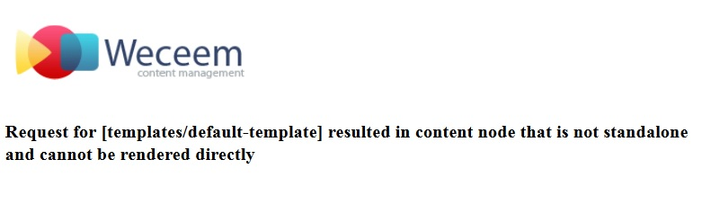
Delete content gives the user possibility to delete selected content. If the content contains children, the error
message will be displayed and content won't be deleted.
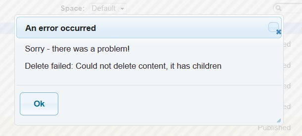
Move to Space operation should move content from one Space to another one, but currently not implemented yet.
Duplicate should copy the selected content to the other holder, parent content or even in another Space, but
currently not implemented yet.
Also there are several operations that can be done on content repository tree, f.e. the user can drag a content and
drop it as a child to another content. It is possible such way to move or copy the content to the another location.
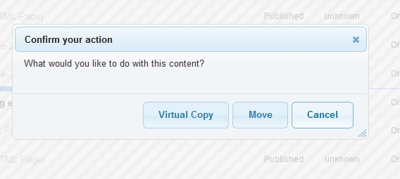
4.23 Tags and JSP content
Weceem is built with Grails which provides a technology called Groovy Server Pages. In essence, it allows you to embed
special tags in the content to perform special functions or logic. Some content types in Weceem (Template, Widget and
HTML) support the use of these tags to provide advanced features.
To users of JSP (Java Server Pages) this will be a familiar concept.
These custom tags or "GSP tags" as they are called, use the XML namespacing syntax:
Search:
The "wcm:" prefix is the Weceem tag namespace. This tells you it is a Weceem-specific tag you are using. Grails provides
its own "g:" namespace for basic built-in functions like link creation, iteration over items in a list and so on.
Attributes can be passed to these tags as you would with HTML, with the addition of a Groovy-based "Expression Language"
(EL) that lets you pass around variables that are available to the page or execute small pieces of code to perform
calculations. These are put inside a dollar and brace syntax "${...}":
<g:each in="${node.lineage}">
${node.title.encodeAsHTML()}<br/>
</g:each>The above would iterate over every item in the "lineage" property of the "node" object. The "node" object represents the
current content node being rendered. See the reference section on page variables for more details of the available
objects.
You will see here also that the EL can be used outside of tag attributes, to render information into the page output.
As a side-note, the encodeAsHTML() method called in that example escapes the resulting title text so that it is safe for
inclusion in HTML output (it escapes special characters to HTML entities). This encodeAs functionality is provided by Grails.
Using these features you can code your Template and Widget nodes to perform all kinds of powerful functions, from
listing child nodes of the current page, to generating RSS feeds. See the Weceem tag reference for full details.
While Templates are used for laying out a page, Widgets are used to render fragments within a page. These might be page
content such as header/footer text or reusable code that renders a list of news items.
Widgets can use the same GSP tags as Templates, which makes them very powerful. The News content on the home page of
this site is a Widget, and the default space renders blog entries using Widgets.
To render widgets inside a Template (or GSP-enabled HTML content node) you use the <wcm:widget> tag:
<html>
<head>
<wcm:widget path="widgets/resources"/>
<wcm:widget path="widgets/metatags"/>
</head>
<body>
<wcm:widget path="widgets/header"/>
<wcm:content/>
<wcm:widget path="widgets/footer"/>
</body>
</html>The above could be used as a generic template for content, pulling in your standard SEO meta tags from a "metatags"
widget, and JS and CSS resources from a widget called "resources".
The "resources" widget might look something like this:
<link rel="stylesheet" type="text/css" href="${wcm.createLink(path:'css/main.css')}"/>
<script type="application/javascript" src="${wcm.createLink(path:'js/jquery.js')}"/>This uses the <wcm:createLink> tag to get the full URI to the resources within the current space.
4.25 Using images in HTML content
To insert images into HTML content, you use the image icon on the rich text editor's toolbar.
This will allow you to:
- upload a new image
- use one that has been uploaded already
- insert a URL to an image on the web
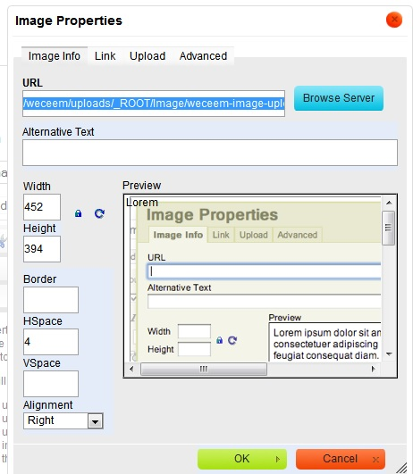
When using the option to upload or browse the images on the server, the files will be located in the "/Image" folder on
your server (<weceem-application-path>/WeceemFiles/<space-alias>/Image).
If you have uploaded files as Server File nodes, if you did not put them inside the /Image folder then they will not be
visible to the FCK file editor browser, but you can still link to them by entering in their full or relative URI.
4.26 Uploading and linking to files
There are two ways to upload files to your Weceem content repository.
Creating Server File nodesWhen you create a Server File node in the repository, it will be uploaded from the Weceem editor into the server
directory allocated to the space, at a path defined by the Alias URIs of its ancestor Server Directory nodes.
Once the file has been uploaded it cannot be changed - the node can be deleted and the file will also be deleted.
You link to server file nodes in the same way as you do any other content, using the wcm.createLink or wcm.link tags.
Uploading while editing HTML contentYou can also upload files - most likely images - using the file uploader in the rich HTML editor when editing a HTML
content node. It is important to note that all such files are uploaded to a
/Image folder under your space's server
folder. Server File nodes will not automatically be created for these, and they are not needed - unless you use the
"Synchronize Files" option in the Administration section of Weceem.
4.27 Controlling who can see content and when
With Weceem you can restrict who can view your content by user role, as well as the date period during which the content
is available.
Automatic publishing and removal of contentEvery type of content has a Status, a Publish From and a Publish Until field. Together these work to provide a simple
automatic publishing workflow.
Writing content for automatic publishing laterTo write content today but have it available to view only at some point in the future you just do the following:
- Set the status of the content to Draft, Approved or some other non-"published" status (apart from Archived!)
- Set a value in the Publish From field in the "Extras" section of the editor
Once saved, Weceem will automatically publish your content when the time has passed (within a minute or so of the time)
by moving it into the Published status.
Writing content that disappears after a certain date and timeTo perform the opposite - automatic removal of public content - you simply set the Publish Until date and time on your
content. When this time has passed, the content will be put into the "Archived" status which is not visible to the
public. You will still be able to view the content in the repository.
Restricting access by userTo limit the content that different users can view, you need to edit your Weceem security policy file.
All that is required is that you grant the "view" permission only on the URIs and content types that you wish the user
role to be able to see.
4.28 Creating sites with content in different languages
Often your site will need to present content in multiple languages. You may provide translations of your site, say in
French and German as well as your primary language.
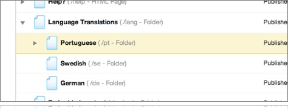
It is often the case that not only does the text differ in other languages, but images, CSS and other resources may have
differ, and in fact due to different territory restrictions you may have very different content for each language.
With this in mind, the recommended way to achieve this in Weceem is to create a Folder node for each language you
support, and add the translated content under those folder nodes. For content that is the same as the primary language,
you could create Virtual Content nodes to "defer" to the original primary content.
To give your users access to this content, you simply add some links or a selection box to your page templates - so they
click on the language they want and it takes them to the content for that language.
Processing and rendering content in a CMS is a relatively time consuming activity, particularly with complex pages that
render external feeds or loop over other content nodes.
So as with regular websites it makes sense to use standard browser caching features to reduce the number of requests for
content and supporting HTTP mechanisms for detecting changes to content.
Weceem supports both of these aims by implementing smart ETag handling as well as allowing you to tell the browser how
long to keep the content for before checking for new versions using ETag. With ETags, the browser still makes a request
to the server to check for changes, but if there has been no change, receives no new content.
This is done by calculating ETags for all URIs in your repository, based on the contents of other nodes on which those
depend. For example even a simple home page is dependent on at least a Template node and likely at least a couple of
widgets. This information is cached by Weceem, so checking for new content is very quick.
However this means that the ETag for your home page must change if the Template or widgets have been edited - otherwise
users will continue to see your old home page styling for some time.
Weceem handles this by allowing you specify the URIs of content that a node is dependent on, a "maximum age" and also
whether content contains user-specific information (which means that a different ETag is used per user).
Content DependenciesWhen editing content, there is a "Content dependencies" field in the Advanced settings. This is where you enter a
comma-delimited list of URIs on which the content node depends. By dependency we mean that this content's visual
representation may change if any of these nodes are changed.
Wild cards of the form /
are supported, to represent any dependents.
There is however no need to specify dependency on the content Template, because this is handled automatically for you.
For example a Template used for your entire site may render widgets for header and footer. If you want all content that
uses this template to become invalidated if the header or footer change, you would set the content dependencies to e.g:
widget/header, widget/footer
If you had a dependency on a lot of widgets, you could simplify this with the wildcard:
widget/
Another example is a News widget that uses wcm:eachChild to iterate over the news article nodes at URI "news-articles".
Here you'd set the content dependencies of the widget to:
news-articles/
This way, any template that depends on this news widget, will also depend on the news articles, and hence everything
invalidates as appropriate.
NOTE: some content types are smart and add some implicit dependencies. For example Blog automatically depends on its
BlogEntry children. This is required because a Blog page normally lists its child nodes, and needs to update if new
entries are added.
Controlling how long a browser may keep a cached pageAside from the dependencies, you can tell the browser how long to wait before checking for new content. For example if
you know that usually you don't post more than one news article per day, and that even if you did you didn't mind
someone not seeing the very latest, you can tell Weceem this.
Each content node has a setting labelled "Is updated" in Advanced. Here you can select how often the node is likely to
be updated. If you never want it to be cached you can set this to "All the time". If you know that the content is
unlikely to change you can set it to something like "Weekly" or "Never"
Doing this reduces the requests made to your server - saving you CPU time and bandwidth, and improving the response time
of your site for users.
Note that if a user uses the "refresh" button in their browser, they will always get the newest content.
User-specific contentIn some cases you may use Weceem's advanced scripting and widget features to present user-specific information. This
typically uses the HTTP session to store user information, such as the contents of a shopping cart, or their user ID.
By ticking the "User specific content" option (available on Template nodes only in 1.0), you can instruct Weceem to
allow the client to use cached content but still update if that user's rendering of the content will have changed.
When checked, this option forces Weceem to create a user-specific ETag for the content using that template. This is done
by monitoring the HTTP session for changes. Any changes to the HTTP session result in a new ETag for pages using
that template.
If you have other data changes that should invalidate the user's view of the content, but don't directly change the
session, you can force this simply by writing to the session.
For example if you have a Widget that renders a log in / log out button depending on whether the user has a cookie or
not (perhaps for a separate app on the same domain) you simply make that widget set a variable in the session if the
cookie value is no longer present:
<g:set var="hasCookie" value="${request.cookies.find { it.name == 'userInfo' }?.value}"/><%-- only if the presence of cookie has changed to we change the session --%>
<g:if test="${session.userLoggedIn != hasCookie}">
<g:set var="userLoggedIn" scope="session" value="${hasCookie}"/>
</g:if><%-- render the links --%>
<g:if test="${hasCookie}">
<wcm:link path="user/logout">Log out</a>
</g:if>
<g:else>
<wcm:link path="user/login">Log in</a>
</g:else>4.30 Publishing Feeds
You can expose RSS/Atom feeds of any list of child nodes in your repository with a simple tag, wcm:feedLink.
This tag will create the correct <meta> tag in the HEAD section of your HTML so that any RSS readers that request the
feed will get a list of nodes in reverse date order:
<head>
<wcm:feedLink type="rss" path="${node}"/>
</head>This would add a feed for the children of the current page. For full details see
Tags section.
5 Weceem security policy
The Weceem security policy file is a Groovy script in your server filesystem, that lets you control who can access your content and what they can do with it.
The security policy uses information about the currently-logged in user's roles as supplied by the integration with your authentication system.
The security system gives you control over:
- spaces that users in different roles can access
- URI paths in each space these users can access
- permissions (admin, create, update, delete, view) the users have for these URI paths
- the types of content nodes for which the users have these permissions
So in combination, you can control how people interact with your site - like offering protected areas for known users, and allowing comments from site visitors on some content and not others.
Setting a security policy
The Weceem plugin automatically looks for a security policy - which is a Groovy script - using the following logic:
- It looks to see if the Grails configuration variable "weceem.security.policy.path" has a value set by the Grails application's Config.groovy.
- If so, it uses that as the file path. If that variable is not set, it will look for the system property "weceem.security.policy.path" and use that if set.
- If neither are set, it will initialize with default permissions where ROLE_ADMIN can do anything, ROLE_USER can create/edit content, and ROLE_GUEST can only view.
How to write a Weceem security policy
Weceem plugin does not predefine any security role names - role names are just strings that your authentication system associates with users. The Weceem application happens to use Acegi/Spring security and is coded to supply roles called ROLE_ADMIN, ROLE_USER and ROLE_GUEST, but you are not limited to using these names.
Here's an example policy :
// The policy closure must be assigned to the policy variable
policy = { // Here we define a role - this can be anything your authentication
// system provides, but with Weceem Application edition, ROLE_GUEST, ROLE_USER,
// and ROLE_ADMIN are used.
// Note also that Weceem automatically adds the user's login as a special role
// eg. user "fred" automatically has a role added called "USER_fred" for easy per-user
// access control
'ROLE_ADMIN' {
// We're defining permissions for any space so use '*'. Alternatively
// specify a list of space alias URIs eg: space 'internal', 'extranet' (no square brackets!)
space '*' // Control whether this role can access Weceem admin functions eg edit/create spaces
admin true // Control whether this role can create new content in this space
create true // Control whether this role can edit content in this space
edit true // Control whether this role can view content in this space
view true // Control whether this role can delete content in this space
delete true
} 'ROLE_USER' {
space '*'
admin false
create true
edit true
view true
delete false
} 'ROLE_GUEST' {
space '*'
admin false
create false
edit false
view true
delete false // Here we have URI-specific access restriction
// We prevent guests from viewing the extranet
"customers/extranet" {
view false
} "blog" {
// Limit creation to comments on blog only
create types:[org.weceem.content.WcmComment]
}}Per-URI permissions can set the same permissions that can be set on the space, and these take precedence. The permissions defined for the space are used as a fallback if there is no matching per-URI permission defined for that role.
So you can set "view false" on the spaces but then open up parts of the URI with "view true", or the other way around - however you like.
To specify permissions for certain content types only - specify a list of types instead of true/false, as is the case in the example above that permits users with ROLE_GUEST to only create WcmComment nodes and even then, only under the /blog/ part of the site.
This "types" list is a list of content classes that must be available on the classpath.
6 Developer Guide
This section covers the internal details that can be used to customize Weceem within your application, create custom
content types and other more technical subjects.
6.1 Hooking into the Admin interface
Hooking into the Admin interface of WeceemApplications can add items to the Weceem "Administration" page by using the Navigation plugin that Weceem CMS uses, to add items to the navigation group "weceem.app.admin". The Weceem Application does this :
class UserController {
def authenticateService static navigation = [group: 'weceem.app.admin', action: 'list', title: 'users']
}The navigation plugin uses this convention property to place the "list" action of the user controller into the "Administration" section of Weceem Admin.
6.2 Create custom content types
Weceem provides many content types as standard. Each content type has a specific purpose, with different fields in the editor.
Some content types are directly rendered when requested, others are used by other content nodes to compose the page seen by the user.
The standard content types available in Weceem are :
- Action - A server-side action that will execute the code in a Groovy Script node, for example to create new content nodes or send an email
- Blog - The root node of a Blog, which has Blog Entry nodes as children
- Blog Entry - An entry (child of) a Blog node
- Comment - A comment on a content node. Any nodes can have comments attached or created.
- External Link - A URL of another website. When this URI is rendered, it redirects to the external site
- Folder - A folder for grouping together content nodes and creating URI hierarchy
- Groovy Script - A piece of Groovy code to execute on the server, used by Action nodes
- HTML - A piece of HTML which may contain GSP (Grails Server Page) tags
- JavaScript - A piece of JavaScript source
- Server File - A file uploaded to the Weceem repository and stored on the server filesystem, e.g. an image file
- Server Directory - A directory on the server filesystem which contains Server File nodes
- Stylesheet - A CSS style sheet
- Template - A GSP template used to layout and decorate the current content node
- Widget - A reusable GSP fragment for rendering sections of a page, e.g. a header/footer or a remote news feed.
Creating custom content types
You can add new content types that will be editable by your users and displayed in the repository along with the standard content types.
These custom types can have full control over how a request is handled (e.g. issue a redirect, like WcmExternalLink does) or delegate to established rendering mechanisms within Weceem. You might have it call out to a PDF generator for example, or render some data using an alternative presentation technology e.g. wiki rendering or Freemarker. They can also specify how their properties should be edited in the repository, and hook into events.
To create a new content type, you just need to create a new Grails domain class that extends the WcmContent class and follow a few simple conventions. You can create a basic template for a new content type using the create-content-class script :
grails create-content-class com.mycompany.Product
This will create the domain class under grails-app/domain/, with some default placeholder code. Here is an of the contentions.
import org.weceem.util.ContentUtils
import org.weceem.content.WcmContentclass PressRelease extends WcmContent { // Set to false if this content node should never actually be rendered
// i.e. Groovy Script nodes cannot be rendered directly.
static standaloneContent = false String getMimeType() { "text/html" } String content /**
* Must be overriden by content types that can represent their content as text.
* Used for search results and versioning
*/
public String getContentAsText() { ContentUtils.htmlToText(content) } /**
* Should be overriden by content types that can represent their content as HTML.
* Used for wcm:content tag (content rendering)
*/
public String getContentAsHTML() { content } static constraints = {
content(nullable: false, maxSize: 65536)
} static editors = {
content(editor:'HtmlCode')
} static transients = WcmContent.transients
}It declares a new type which, when created, will immediately become editable in the repository when you run your application. There are several conventions that apply, described in more detail below -
Basic considerationsYour descendent class has certain conventions it must honour for correct operation :
- the Grails "transients" property must be populated with the sum of the superclass transients and any new transient properties you add (should not be necessary for newer Grails versions)
- the "searchable" property convention must be defined as per Grails Searchable plugin, to add any fields that should be indexed for searching
Controlling the editing of your content type
To customize behaviour for the properties of the domain class, the "editors" closure property is used, like Grails constraints closure - but in this case how they are treated in the Weceem editor.
For each field of the content domain class you can define the order in which they appear in the editor - based on the order in which they are listed in the editors closure.
You can also set the editor used for each property. These have names like HtmlCode, ReadOnly, CssCode, GroovyCode etc. You can also define your own editors if the supplied editors are not suitable. See the section on customizing content editors.
Some properties are for internal use only, for those you can set hidden:true.
Finally, you can push your properties into the "Extras" editor group that is displayed separately by setting "group" to "extra":
static editors = {
isbn(editor:'ISBNEditor')
genre(editor:'GenrePopup', group:'extra') Displaying content as text or HTML
For various reasons such as search results and versioning, Weceem needs to be able to get some kind of representation of your custom content as both plain text and HTML. If your needs are different from the defaults, you can override the methods for getContentAsText and getContentAsHTML.
The default behaviour is:
/** * Must be overriden by content types that can represent their content as text.
* Used for search results and versioning
*/ String getContentAsText() { "" }
/**
* Should be overriden by content types that can represent their content as HTML.
* Used for wcm:content tag (content rendering)
*/ String getContentAsHTML() { contentAsText ? contentAsText.encodeAsHTML() : '' }So as a minimum, override getContentAsText() - but if there is a reasonable HTML representation, e.g. for HTML, Wiki or other richly formatted content, you should also implement getContentAsHTML().
Defining mime type
Weceem's content controller will ask the content for its MIME type when building the response. In many content types this is a constant value and is not persisted, but in types such as WcmContentFile this is persisted so that the type can be overridden by the user.
To return the correct MIME type, just implement the getter:
String getMimeType() { "text/html" }This non-static value is read whenever the content is to be served. This means that you can determine it on a per-node basis, which is how the WcmContentFile type specifies the mime types of downloadable files.
Customizing rendering of your content
Weceem delegates rendering of content to the content node itself. If there is no rendering implementation provided, it will simply render the node as text to the client. This mechanism is used by the built in content types to render themselves appropriately. Some types render HTML decorated by a template, and others issue redirects.
There are two conventions that control the custom rendering of content:
- Static "standaloneContent" property is set to false if content type is not intended for direct rendering. This prevents node types used by other types from being rendered when their URI is requested - e.g. is the built-in template and widget types, which make no sense being rendered on their own.
- Static "handleRequest" Closure property provides custom implementation of rendering if you require it.
The handleRequest closure is executed so that it delegates to Weceem's content controller. This means you can use all the regular Grails dynamic controller methods and properties (render, redirect, response, request, session) as well as some custom methods to render Weceem content nodes using the normal GSP and templating mechanisms.
Here's an example of how WcmHTMLContent renders its regular HTML or GSP code :
static handleRequest = { content ->
if (content.allowGSP) {
renderGSPContent(content)
} else {
renderContent(content)
}
}This implementation calls WcmContentController's renderContent method if the content is HTML, which will render the content inside a Template if the node has one. Alternatively if the content is classed as GSP content, it calls the controller's renderGSPContent method which renders the content as GSP code, inside a template if one is found for the node.
Another example is the External Link type which redirects the browser to the target URL of the node :
static handleRequest = { content ->
redirect(url:content.url)
}This implementation uses the standard Grails "redirect" method to redirect to the URL specified in the content's "url" property.
The Template, Widget and HTML content nodes can use Weceem tags and other Grails tags to perform view rendering logic.
Interacting with content events
Content nodes can hook into common events, such as deletion and updates. To do this your content class needs to implement methods for any events it wants to support. None of these are mandatory, and you can implement only those you need. The available event methods are defined in
WeceemDomainEvents.groovyThe event methods are:
boolean contentShouldBeCreated(WcmContent parentNodeOrNull)
This method allows the content to veto whether or not it can be created. This is called on the newly populated but not saved content node, and is passed the parent node that it would be attached to, which can be null if it is root level content.
void contentDidGetCreated()
This is called after the content node has been created and saved.
boolean contentShouldBeDeleted()
This allows the content type to veto whether or not the node can or should be deleted - e.g. it may not be possible to delete a content node if it has children.
void contentWillBeDeleted()
This event is triggered just before the node is deleted.
void contentDidGetDeleted()
This event is triggered immediately after the node is deleted.
void contentDidChangeTitle(String previousTitle)
This event is called when the title property of a node has changed.
void contentDidGetUpdated()
This event is triggered after a node has been edited and the new values saved.
boolean contentShouldMove(WcmContent targetParent)
This event is called to allow it to veto being moved to parent nodes that are not compatible. Returning false will prevent the user moving the node (changing its parent).
This is called after the content's parent has been changed and saved.
boolean contentShouldAcceptChildren()
This event is called to find out if the current node can accept child nodes.
boolean contentShouldAcceptChild(WcmContent newChild)
This event is called to find out if the current node can accept the new child node. There might be per-node reasons for vetoing new children.
You can also hook into many events outside of the domain classes themselves, using the Event Service.
Customizing the icon shown in the repository
You can supply an icon for your custom content types, that will be used in the admin UI of Weceem, e.g. in the repository view. To do this, define a static "icon" property which contains the arguments you would pass to
Grails g:resource tag to create a link to the resource :
static icon = [
plugin: "weceem",
dir: "_weceem/images/weceem/content-icons",
file: "widget-32.png"
]
It is vital to include the "plugin" attribute and value if you are placing your custom content class in a plugin of your own.
Content versioning
In order to participate in Weceem's content versioning system, you need to add any properties you wish to have serialized to the getVersioningProperties() implementation of your class. This function returns a map of values that are stored in the content revision.
These are simple values that must be expressible as strings. By necessity you may refer to objects not available at the time the user views your revision, so all complex object references that need to be versioned should be coerced to some kind of text representation.
For a real example, here's the code from WcmHTMLContent :
Map getVersioningProperties() {
def r = super.getVersioningProperties() + [
menuTitle:menuTitle,
htmlTitle:htmlTitle,
keywords:keywords,
template:template?.ident() // A string representation of template object
]
return r
}In almost all cases you will want to call the super method to ensure all inherited properties are correctly versioned.
6.3 Custom content editors
As mentioned in the create custom content type section, you can specify what kind of editor is used for each property of content types. By following some simple procedure, you can also create your own new editors.
Weceem will locate the appropriate editor using the name of the type of the property, if a custom property editor name is not given.
Content Editors
Weceem has quite a few editors that are available to edit all the predefined content type properties.
| Editor Field Name | Description |
|---|
| String | for single-line strings |
| LongString | for multi-line strings |
| Integer | for whole numbers |
| Boolean | for boolean fields |
| Date | for dates, includes datepicker and HH and MM fields |
| Title | uses a larger font for editing the title |
| Tags | UI for displaying and add/remove tags via ajax |
| ContentFileUpload | renders a file upload field or file information if already uploaded |
| RichHTML | HTML editing with rich editor |
| HTMLContent | HTML content editor that checks allowGSP property on content and switches between RichHTML and HtmlCode as appropriate |
| HtmlCode | Code editor with highlighting for HTML |
| JSCode | Code editor with highlighting for JavaScript |
| GroovyCode | Code editor with highlighting for Groovy code |
| CSSCode | Code editor with highlighting for CSS code |
| LanguageList | a language selection drop-down list |
| WcmScript | For selecting any WcmScript node in the current space |
| WcmStatus | For selecting any WcmStatus instance |
| WcmTemplate | For selecting any WcmTemplate instance in the current space |
| WcmSpace | For selecting a Space |
| ReadOnly | a text-only rendering of the value with no editing capability |
| ReadOnlyURI | a text-only URI value, using URL encoding of restricted chars |
| ReadOnlyDate | a read-only display of a date |
Writing your own content editor
Creating a custom editor is simply a case of defining one or two Grails tags in the "wcm" namespace.
Editors are resolved by looking for a tag with the target editor name appended to "wcm:editorField". So for example a new editor for choosing a colour might be called Colour and the tag would be called "editorFieldColour" :
class MyWeceemTagLib {
static namespace = "wcm"def editorFieldColour = { attrs ->
out << someFancyColourPicker(pageScope.content[attrs.property])
}
}These tags are called with the following attributes:
- property - property name of the content object for which the tag should render a field
Your tags can access the current content object being edited using :
pageScope.content[attrs.property]
In the above example, you would not need to specify editor:'Colour' on your custom content classes if the property type is actually an instance of a Colour class.
Note : Polymorphism is not yet supported in this scenario so only exact class matches will work.
Providing resources needed by custom editors
Some editors - e.g. the FCK and code editors used by Weceem, require JavaScript and CSS resources to be included in the <head> section of the editor page. To achieve this, Weceem looks for a tag with a name like "wcm:editorResourcesColour" where the type name is appended to "editorResources". This tag can output anything you like into the <head> section of the page:
def editorResourcesTags = { attrs ->
out << g.render(template:'/editors/tags_resources', plugin:'weceem',
model:[name:attrs.property, value:pageScope.content[attrs.property]])
}Here, the Tags editor uses another GSP to output the more complex resource elements it requires, setting up JS code in the <head> section to bind add/remove buttons using jQuery.
Capture data from forms and perform an action, such as sending mail after submission of a contact form by writing some Groovy code that you store in the content repository. This happens dynamically and you don't need to redeploy your Weceem application or restart it.
Two content types work together in Weceem to enable you to write arbitrary server-side code. The Scripted Action node type is used to receive requests, and delegates the work to a Groovy Script node.
For example, to create a Contact form that sends mail to a known address, you could implement it like this :
- Create a Groovy Script node in your repository, and paste into it the following code :
def args = [
recipients:'admin@yourserver.com',
subject:'Message from website visitor'
]
try {
sendMail {
to args.recipients
if (args.ccRecipients) {
cc args.ccRecipients
}
subject args.subject from params.senderAddress
body params.message
}
redirect(uri:params.success)
} catch (Exception e) {
log.error "Can't send mail", e
redirect(uri:params.error)
}This code expects the Grails "mail" plugin to be installed (as it is by default in the Weceem application WAR file). This code is exactly what you would write if you were writing your own
Grails controller action You can call redirect, render and other Grails controller methods as usual. The request parameters are in "params".
WeceemDomainEvents.groovy2. Now that you have a script to run, you need to create a Scripted Action node to respond to requests for a specific URI and run the script. When you do this, select the script you created in the "Script" field. The full repository URI of this Scripted Action content node is the URI that needs to be used in your HTML form's action attribute. You can create links to this action inside your own Widget or Template nodes using the wcm:createLink tag.
With the above example, the HTML form needs to supply fields "senderAddress" and "message". It will redirect the user to the value of the "success" parameter which will usually be a URI in your content repository created using the wcm:createLink tag.
You can write any Groovy code you like in the Groovy Script node. The possibilities are endless for example, you can call out to external web services, perform calculations, render complex results in alternative formats (e.g. JSON).
However, you can easily degrade the performance of your server by writing inefficient code in a Groovy Script that is executed frequently.
It is strongly recommended that you limit the users that can create Groovy Scripts using the Weceem Security Policy.
6.5 Embedding content
In some custom applications you may want to embed some Weceem content within your own Grails GSP views. This is easily achieved for most situations using the new
wcm:render tag as of release 1.1.
However, if you need to render content with more control over the process - e.g. using an artificial request/response to render content for use in emails, you can use the wcmRenderEngine bean.
This bean offers methods for rendering a specific content node.
You must typically pass in a request and response to use - given that most of Weceem functionality uses Grails tags and these require features of requests and responses - although you can usually also pass in your own controller instance if you have one.
See the source code for
RenderEngine on github for more details.
6.6 Exporting and importing content
Each Weceem space (repository) can be individually exported and imported individually and is useful for backups or migrating content between servers or spaces.
For this :
- Go to the Administration section
- Select option - "Spaces"
- Click the Export or Import buttons
- Select space when prompted.
Use the default import/exporter - it is the native Weceem exporter.
The exported ZIP file will include all content nodes and uploaded files for that space. You can then import this ZIP into another Weceem instance, or to a different space in the same instance.
Importing will replace any content in the space!Note :Exported spaces will not include your user accounts or any custom WcmStatus nodes you created, as these are not Space-specific.
6.7 Hooking into content events
In custom Grails applications that use Weceem plugin you may need to perform actions when certain events occur on content.
To do this, register a listener with the WcmEventService and implement any of the event notification methods you require.
First, you inject the WcmEventService using Grails dependency injection, or obtain it via the Spring ApplicationContext, and then call the "addListener" method :
class MyService implements InitializingBean {
def wcmEventService void afterPropertiesSet() {
wcmEventService.addListener(this)
} void contentDidGetUpdated(WcmContent node) {
log.info "Look! Content ${node.title} was updated"
}
}The list of available events is defined in the WeceemEvents class, which uses an optional event callback method mechanism -
package org.weceem.eventimport org.weceem.content.WcmContentclass WeceemEvents {
static events = {
/* Called just before saving the node */
contentWillBeCreated { WcmContent contentNode, WcmContent parentNode -> }
/* Called after a new node has been created */
contentDidGetCreated { WcmContent node -> } /* Called before a node is deleted */
contentWillBeDeleted { WcmContent node -> }
/* Called after a node is deleted */
contentDidGetDeleted { WcmContent node -> } /* Called after a new node is updated */
contentDidGetUpdated { WcmContent node -> } /* Called after a new node is moved to a new parent */
contentDidMove { WcmContent node, String previousURL, WcmContent previousParent -> }
} static {
EventManager.define(WeceemEvents)
}
}Implement the methods you need, using the signature defined in the WeceemEvents class.
There is a separate event interface called WeceemDomainEvents (given below) for developers that supply custom content types and for this you do not need to register as a lister - they are called as part of the regular lifecycle.
package org.weceem.eventimport org.weceem.content.WcmContentclass WeceemDomainEvents {
static events = {
/* Called before a new node is created. Return true to allow the creation */
contentShouldBeCreated { WcmContent parentConent -> }
/* Called just before saving the node */
contentWillBeCreated { WcmContent parentConent -> }
/* Called after a node has been created, so that it can intialize anything that depends on it */
contentDidGetCreated()
/* Called to see if a node can be deleted. Return true to permit the deletion */
contentShouldBeDeleted()
/* Called before a node is deleted. */
contentWillBeDeleted()
/* Called after a node is deleted. */
contentDidGetDeleted() /* Called after a node's title has changed (edited). */
contentDidChangeTitle { String previousTitle -> }
/* Called after a node is updated (edited). */
contentDidGetUpdated() /* Called before a node is moved to a new parent. Return true to permit the move. Parent may be null */
contentShouldMove { WcmContent newParent -> }
/* Called after a node is moved to a new parent. */
contentDidMove { String previousURL, WcmContent previousParent -> } /* Called to establish whether this node can have children. Return true to permit addition of children */
contentShouldAcceptChildren()
/* Called before a node is moved to become a child of this node. Return true to permit addition of the new child */
contentShouldAcceptChild { WcmContent possibleChild -> }
} static {
EventManager.define(WeceemDomainEvents)
}
}
When a request is made to Weceem, it goes through a number of steps to produce the final content.
- Weceem first locates the content at the URI path specified in the request
- Once located, it checks if content can be rendered. Content which is not "standalone" and used by other content cannot be rendered directly (e.g. Templates cannot be rendered directly).
- Next, it checks to see if the content implements rendering itself. If it does, it will call the content's handleRequest method to perform the rendering of the response.
- If there is no handleRequest method, Weceem will look for a "template" property on the content object and if it finds one, will ask that template to render the content.
Different content types may implement handleRequest differently - e.g. HTML Content first checks if the content is set to allow GSP tags to execute. If they are, it will execute the page and capture the output. The content is then passed to the template (if any) and returned to the client.
Note : If the content supports templates and a template is not set, Weceem will look up the content tree to see if any ancestors specify a template and will use the first one it finds.
In this most common case, the HTML and Template will work together and render one or more Widget nodes using <wcm:widget> to render common page elements like the header and footer sections.
Other types such as External Link will use handleRequest to issue a redirect to the browser.
Default document handling
Weceem supports httpd-style request URLs that end in /, it will automatically check for a child node of the URI, with one of the default names ("index.html" or "index"), much like a regular webserver.
6.9 Integrating the authentication and authorisation system
The Weceem plugin neither provides an authentication mechanism nor depends on authentication plugins. Just wire-in whichever authentication system you want to use - e.g. the Weceem CMS Application wires up the Weceem plugin to the Spring Security plugin for authentication and provides a simple user management UI as part of the Weceem Admin.
Customizing AuthenticationThe WcmSecurityService class has simple methods on it that the CMS uses to get information about the current logged-in user. To customize this, just replace or modify the delegate property on the service - e.g. to plug in Acegi (note that Spring Security replaces Acegi - see below for an off the shelf solution), you would place code like this in the BootStrap of your application :
def authenticateService = context.authenticateServicecontext.wcmSecurityService.securityDelegate = [
getUserName : { ->
def princ = authenticateService.principal()
if (princ instanceof String) {
return null
} else {
return authenticateService.principal()?.username
}
},
getUserEmail : { ->
def princ = authenticateService.principal()
if (princ instanceof String) {
return null
} else {
return authenticateService.principal()?.email
}
}
getUserRoles : { ->
authenticateService.userDomain()?.roleAuthorities ?: ['ROLE_GUEST']
},
getUserPrincipal : { ->
authenticateService.principal()
}
] Integration with Spring Security
If you create your own application using Weceem plugin and wish to use the Grails Spring Security plugin, install the weceem-spring-security plugin to provide the bridge between Weceem and your application's Spring Security authentication/authorization scheme.
When you use this plugin there is no need to write your own UserDetailsService for the Spring Security plugin.
To do this, after installing the plugin you simply have to specify some configuration to tell the plugin how to map from your Spring Security domain classes, and the plugin will make this information available to Weceem :
weceem.springsecurity.details.mapper = { ->
[ // Stuff required by weceem spring sec
username: username,
password: password,
enabled: enabled,
authorities: authorities,
// optional stuff we add
email: email,
description: description,
firstName: firstName,
lastName: lastName,
id: id
]
}This closure must return a map of data used by Spring Security to store the information about your domain class. The "it" passed to the closure is the domain class instance, so the above is returning a map with values copied from the domain class.
Note : Only information required by Weceem is the username, password, enabled and authorities. Everything else is optional and only used by your application if you code it to do so.
The application remains responsible for defining the domain classes and performing the relevant Spring Security configuration to protect your URIs.
6.10 Styling With Templates
Templates are content nodes used to set page layouts on your site. Certain content types such as HTML and Blog, support setting a template when creating or editing nodes. If a template is not set, it is inherited from the content's ancestors.
Typically the template will include the head and body tags, pull in the CSS and other resources required, and provide some common layout elements.
They use standard Grails tags and Weceem tags to render content within the body of the page, as well as meta data about the current page e.g. dynamic titles.
Here's a simple example that renders a dynamic title and renders the content of the current node.
<html>
<head>
<title>${page.title.encodeAsHTML()}</title>
</head>
<body>
<div id="content">
<wcm:content/>
</div>
</body>
</html>The
<wcm:content/> tag is used to render the content of the page the user requested. Its important to remember that your Template is not actually requested by the user by URI - it is simply used to decorate the content the user requested.
You might add a news panel to this layout, by using the
<wcm:widget> tag to render a reusable block that iterates over children of the "News" node to list the titles of articles and links to them.